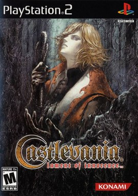
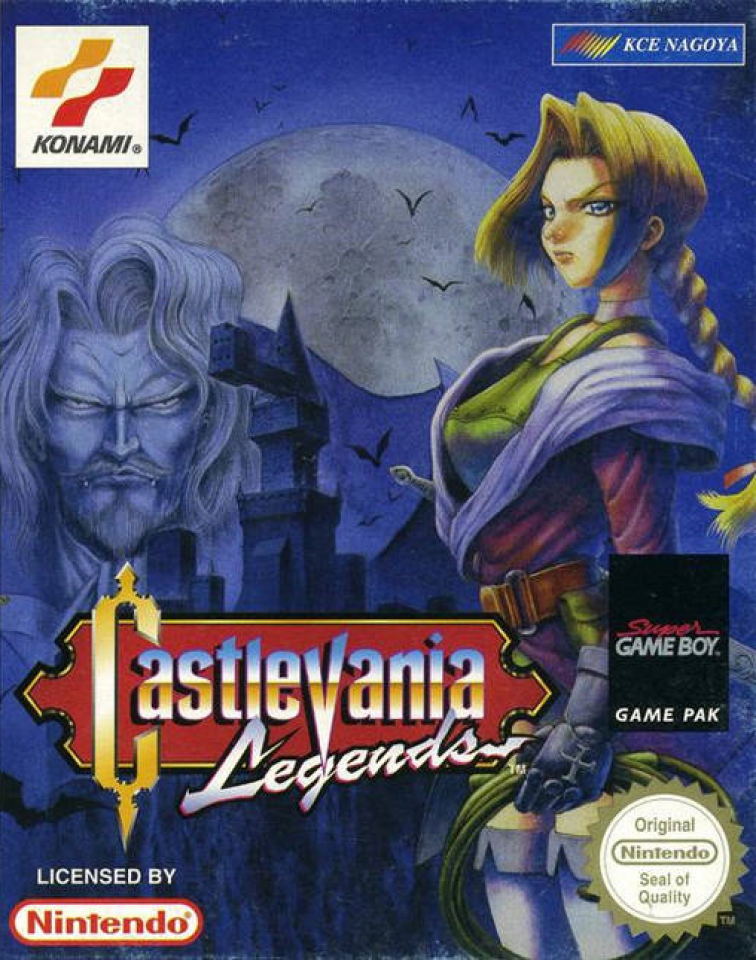
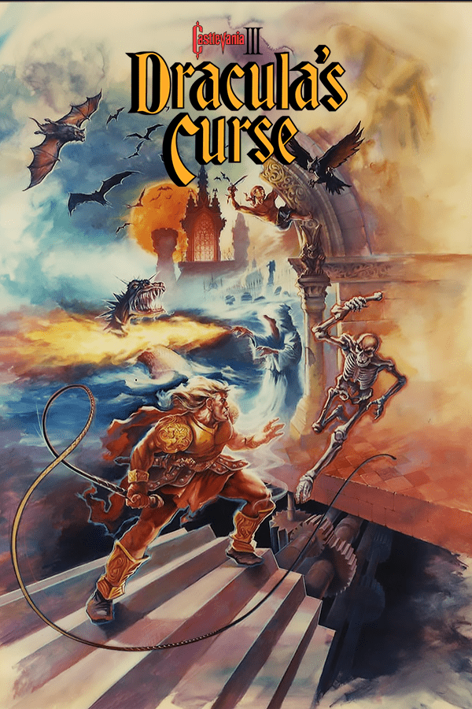
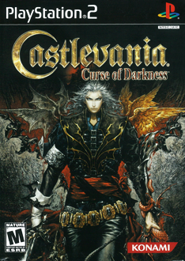
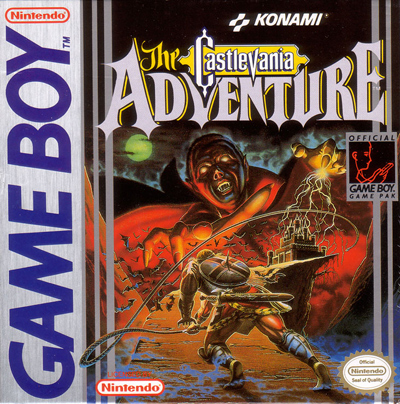
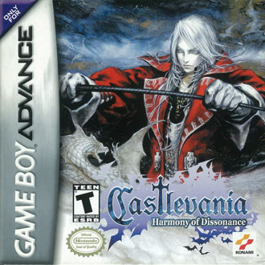
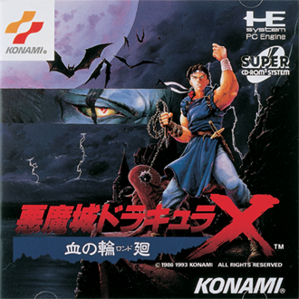
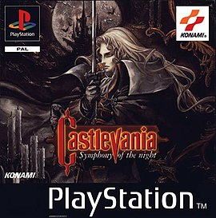

Castlevania: Todos os jogos da franquia em ordem cronologica
Bem-vindo à seção de jogos de Castlevania! Prepare-se para mergulhar em um mundo de ação, aventura e horror gótico. A série Castlevania, criada pela Konami, é uma franquia lendária que tem cativado jogadores há décadas.
Prepare-se para enfrentar uma variedade de inimigos mortais, desde morcegos e esqueletos até demônios poderosos e monstros grotescos. Use seu chicote, conhecido como "Vampire Killer", ou outras armas especiais para derrotar seus oponentes. Além disso, você encontrará itens e power-ups ao longo do caminho que aumentarão suas habilidades e capacidades.
Castlevania: Lament of Innocence - 1095
Castlevania: Lament of Innocence é um jogo eletrônico lançado para o console PlayStation 2, da Sony, sendo também o primeiro jogo da série Castlevania lançado para tal console, e o terceiro a possuir gráficos tridimensionais. Foi primeiramente lançado no Japão e América do Norte em 2003, e na Europa e Austrália em 2004. Cronologicamente, Lament of Innocence é o primeiro título da franquia, sendo ambientado em 1094 e focando no eterno conflito entre os caçadores de vampiros do clã Belmont contra Dracula, o vampiro imortal. Lament of Innocence apresenta Leon Belmont, que busca sua noiva sequestrada no castelo de Dracula.
Lament of Innocence recebeu críticas geralmente positivas, sendo elogiado como um jogo agradável, mas não complexo.
Historia

O objetivo de Lament of Innocence é levar o protagonista Leon Belmont através do castelo cheio de monstros até encontrar Sara Trantoul, sua amada sequestrada. A exploração do castelo é aberta, envolvendo quebra-cabeças, itens escondidos, salas e chefes. Uma sala perto da entrada do castelo contém portais para cinco áreas principais, os quais são acessíveis desde o início. Depois de Leon derrotar o chefe de cada área, a área final torna-se desbloqueada. Restauradores de saúde e itens para melhorar as estatísticas de jogo, tais como resistência e defesa podem ser comprados com o dinheiro do jogo na loja de Rinaldo, perto do castelo.
Como arma principal, Leon possui o chicote Whip of Alchemy, entregue por Rinaldo, alquimista e lojista próximo ao castelo. Mais tarde, Leon pode adquirir mais três chicotes, cada um guardado por um chefe elemental: o Ice, Lightning, e Fire Elemental entregam chicotes dos seus respectivos elementos. Perto do fim do jogo, o chicote Whip of Alchemy se transforma no famoso e destrutivo Vampire Killer. Além disso, Leon pode utilizar uma de suas cinco sub-armas: uma faca, um machado, uma cruz, um cristal e água benta. Combinando-as com uma das sete esferas adquiridas após matar um chefe central, Leon pode realizar um ataque especial poderoso que varia de acordo com a esfera e sub-arma. Durante o curso do jogo, ele vai aprender técnicas especiais e ataques mágicos também.
Dois personagens adicionais podem ser desbloqueados: uma criatura com cabeça de abóbora e Joachim, um vampiro que apareceu no início do jogo como um chefe. A abóbora faz uso do chicote de Leon como arma principal e usa apenas uma sub-arma. Ela tem todas as técnicas de Leon, assim como causa mais dano do que ele. Já Joachim usa como arma cinco espadas espectrais. Ele não tem um inventário, nem a capacidade de usar relíquias e itens de compra da loja de Rinaldo. No entanto, Joachim tem acesso a dois ataques mágicos muito fortes no lugar de sub-armas
Castlevania: Legends - 1450
Castlevania Legends é o terceiro e último jogo da série Castlevania lançado para Game Boy. Foi lançado no Japão em 27 de novembro de 1997, e na América do Norte em 11 de março de 1998. O jogador controla a personagem chamada Sonia Belmont, começando com três vidas, que quando perdidas o jogo termina; mas um jogador pode continuar do começo do último estágio que ele esteve. Existe também uma tabela que sumariza quantos golpes, quanto de dano e quantos inimigos o jogador derrotou. O jogo não faz uso de armas secundárias, ao contrário da maioria dos jogos de Castlevania, dependendo bastante do uso de magia, a qual é uma característica única. O sistema de magias usado depende de cinco "Soul Weapons", que incluem Fogo, Gelo, Santo, Vento e Mágico. Corações podem ser usados para adquirir novas armas. Sonia também pode entrar no modo "Burning Mode", onde ela se torna invencível, move-se mais rápido e possui ataques mais poderosos, embora este modo só possa ser usado uma vez por vida ou estágio.
Historia

A história começa na Transilvânia no ano de 1450. Sonia Belmont, que foi a primeira Belmont (não na cronologia oficial da série) a enfrentar o Dracula. Sonia nasceu com um dom sobrenatural que permitia que ela enxergassem seres das trevas que pessoas comuns não conseguiam ver. Aparentemente, seu avô tinha este mesmo dom, e decidiu treiná-la no uso do chicote, para que um dia ela pudesse enfrentar estas criaturas. Aos 17 anos, Sonia conheceu e se apaixonou por Alucard, que tramava a morte do próprio pai, o Conde Dracula, por não concordar com o reinado de terror que este impunha aos habitantes da Transilvânia. Um dia, Alucard partiu e Sonia decidiu ela mesma invadir o castelo do vampiro e enfrentá-lo. Em certo ponto do jogo, Alucard enfrenta Sonia, com o pretexto de que ele não deixará ela prosseguir, pois é muito perigoso — a menos que ela o derrote e mostre do que é capaz. Após ser derrotado, Alucard entra voluntariamente em torpor e Sonia parte para destruir Dracula. Após a derrota de Dracula, ele jura a Sonia que enquanto o mal existir no mundo, ele será ressuscitado; ela responde jurando que a sua família irá sempre derrotá-lo. No fim do jogo, Sonia dá à luz Trevor, herói de Dracula's Curse, dando, enfim, um começo à história.
Castlevania III: Dracula’s Curse - 1476
Castlevania 3: Dracula's Curse é o terceiro título da série Castlevania produzido para o Nintendo Entertainment System. Ele foi publicado pela Konami no Japão em 1989 e na América do Norte em 1990. Na Europa, foi distribuído pela Palcom Software, em 1992. Posteriormente, foi relançado via Virtual Console. O jogo tem como protagonista o ancestral de Simon, Trevor Belmont, sendo situado 215 anos antes dos eventos ocorridos em Castlevania e Castlevania II: Simon's Quest. Uma mini-série animada original da Netflix foi baseada neste título e lançada em julho de 2017, intitulada Castlevania.
Historia

O ano é 1476, Conde Dracula começa a devastar a Europa com um exército de monstros. O caçador de vampiros Trevor Belmont, atual portador do chicote sagrado Vampire Killer, é chamado de volta à Valáquia pela Igreja Católica, onde anos antes sua família foi exilada por serem temidos devido aos seus poderes sobre-humanos. Há mais três personagens que podem se unir a Trevor em sua missão: Sypha Belnades, uma jovem sacerdotisa com vários poderes mágicos e que se disfarça de homem até o final do jogo; Grant DaNasty, um ágil pirata com a habilidade de escalar paredes e teto; e Alucard, o filho de Dracula, um dampiro com habilidades de disparar bolas de fogo e se transformar em morcego. O final do jogo varia de acordo com qual personagem ajuda Trevor a destruir Dracula.
Trevor e seus companheiros cruzam todo o território da Valáquia, derrotando diversas criaturas e o próprio Conde Dracula no final. Quando este é derrotado, Alucard cai em um torpor auto-induzido, que dura 320 anos (até Castlevania: Symphony of the Night). Grant DaNasty ajuda Trevor na reconstrução de Valáquia, agora que ela está em paz. Sypha pede Trevor em casamento e os dois dão continuidade ao clã Belmont, que volta a ter o respeito que merece.
Castlevania: Curse of Darkness - 1497
Castlevania: Curse of Darkness, conhecido no Japão como Akumajō Dracula: Yami no Juin (悪魔城ドラキュラ 闇の呪印 Akumajō Dorakyura: Yami no Juin?, lit. Castelo Demoníaco Dracula: Maldição das Trevas), é um jogo eletrônico desenvolvido pela Konami. Foi lançado para PlayStation 2 e Xbox em todas as regiões, exceto no Japão, onde o jogo estava disponível apenas para PlayStation 2.
Historia

Mesmo sendo um jogo 3D como Lament of Innocence, Curse of Darkness difere de seu antecessor em vários sentidos. O jogo inclui um estilo de jogabilidade de ação-aventura mais complexo, assemelhando-se mais a Symphony of the Night e Aria of Sorrow. Hector não é um membro do clã Belmont, assim não usando o chicote "Vampire Killer"; ao invés disso, ele possui a habilidade (como Alucard e Soma Cruz) de equipar uma gama de armas diferentes que variam de espadas, lanças e machados a bombas e soqueiras. Contudo, existe um modo de jogabilidade extra que se encontra disponível após o término do jogo que permite os jogadores de jogar como Trevor Belmont, equipado com a "Vampire Killer" e as sub-armas que são facas, machados, água benta, crucifixos e relógio-pára-tempo. O sistema de batalha é de alguma maneira semelhante à de Dynasty Warriors, onde um botão é usado para ataques de seqüência (combos) e um secundário é usado para ataques "finalizantes" mais fortes após ataque(s) normal(is). Ao longo do progresso do jogador pelo jogo, o personagem adquire armas mais poderosas e o número de ataques normais e finalizantes que o jogador pode executar também aumenta, proporcionalmente. Cada tipo de arma diferente possui uma lista de combos distinta que podem ser executados.
Diferindo-se do estilo de acesso de Lament of Innocence, onde o jogador escolhe entre número de estágios distintos todos acessíveis de um corredor central, Curse of Darkness traz um mundo dentro do jogo com um mapa completo, exatamente como em Symphony of the Night. Contudo, o jogo ainda usa a mesma mecânica de mapas de estágios de Lament of Innocence, ao contrário dos gráficos quadriculados dos Castlevanias em 2D. Ademais, uma notável diferença no design dos estágios é que a maior parte do jogo não se passa no castelo do Dracula, sendo assim fazendo com que o jogador explore florestas, montanhas, templos, aquedutos, ruínas e vilas da Europa. O jogador também será auxiliado por "Innocent Devils" ("Demônios Inocentes"), que são criaturas demoníacas desenvolvidas por Hector através da habilidade de Devil Forgery ("Forjamento de Demônio"), com o objetivo de derrotar inimigos e solucionar puzzles dentro do jogo e que podem ser comparados a familiars. Os Innocent Devils (comumente referidos como I.D.'s) possuem seis tipos.
Fairy Type (fada): Ajuda Hector com cura.
Battle Type (batalha): O I.D. mais forte fisicamente. Possui a maior quantidade de pontos de coração.
Bird Type (ave): I.D.'s que lutam contra outros monstros voadores.
Mage type (mago): Ataca com magia de longa distância.
Devil Type (demônio): O tipo extremo de Innocent Devil.
Pumpkin Type (abóbora): Só incluído para humor, apesar de eles aumentarem significantemente o dado de sorte.
Castlevania: The Adventure - 1576
Castlevania: The Adventure foi lançado para o Game Boy no Japão em 27 de outubro e na América do Norte em dezembro de 1989, sendo o primeiro jogo da série lançado para este console.
Historia

O jogador controla Christopher Belmont, que é o bisavô de Simon Belmont. O jogo consiste de quatro estágios e ao contrário de outros jogos de Castlevania, não existem armas secundárias, assim, os Corações são usados para restaurar vida. O jogador possui três vidas, o que resulta fim de jogo quando acabada as três. Armas podem ser modificadas para melhor, como o chicote virando uma corrente de ferro ou de fogo, mas qualquer dano do inimigo irá desfazer a modificação de armas alteradas. No fim de cada nível, existe um "Primary Evil" para enfrentar. Os jogadores podem utilizar de cristais, corações e crucifixos de ouro. Existe também um contador de pontos que, quando chega às marcas de 10.000 ou 20.000 pontos, o jogador recebe uma vida extra. Cada estágio também possui um tempo limite para ser completado.
Dracula desperta de seu sono centenário, pensando que não precisaria temer a família Belmont. Ele estava enganado, e Christopher Belmont lhe prova isto. O jogo se passa em 1576, quando Christopher parte em uma viagem para destruir o Dracula. Durante a batalha com Christopher, Dracula sente que o melhor a fazer é fugir e esperar uma nova oportunidade para atacar, o que ocorre quinze anos depois. Na conclusão do jogo, Dracula é derrotado e seu castelo destruído.
Castlevania II: Belmont’s Revenge - 1591
Castlevania II: Belmont's Revenge foi lançado no Japão e EUA em 12 de agosto de 1991. É a sequência de Castlevania: The Adventure e o segundo jogo da série Castlevania a ser lançado para o sistema Game Boy.
Historia
Ao contrário de seu antecessor, armas secundárias (como água benta e machados) estão disponíveis durante o jogo e, como na maioria dos outros títulos de Castlevania, os Corações são usados para usar e adquirir armas e itens. O jogo inclui quatro níveis, cada um acontecendo em áreas distintas e separadas do castelo com um tema único, como ar, planta, terra e cristal, e podem ser concluídos em qualquer ordem. Existem também grandes salas armadilha nos níveis. O jogo utiliza um sistema de senhas.
Após o Dracula ter sido derrotado por Christopher Belmont em 1576 no jogo Castlevania: The Adventure, Dracula joga uma maldição na família Belmont e 15 anos mais tarde ele sai de seu esconderijo, sequestra o filho do Belmont, Soleiyu, e o transforma num demônio. Com os poderes místicos do garoto, Dracula consegue restaurar sua forma humana e reconstrói o castelo, forçando a Christopher a enfrentá-lo novamente para salvar seu filho e Transilvânia. Após ser forçado a enfrentar e derrotar seu próprio filho, Christopher segue em fúria rumo ao Conde e o derrota.
Castlevania - 1691
Castlevania foi desenvolvido para o Famicom Disk System em 26 de setembro de 1986. Foi portado para o formato de cartucho para o Nintendo Entertainment System (NES) e lançado na América do Norte em maio de 1987 e na Europa em dezembro de 1988.
Historia
Outro século se passou e Dracula desperta de seu sono com um plano: se ele fosse derrotado de novo, ele não seria o único a morrer. Ele rapidamente chamou a atenção de um novo Belmont: Simon Belmont, tataraneto de Christopher que foi treinado com a experiência dos dois grandes caçadores de vampiros antes dele. Acontecendo no ano 1691, Simon enfrenta o Dracula com toda a habilidade de um guerreiro e o derrota, neste que seria o primeiro jogo da série com o título "Castlevania".
O jogo possui seis fases, que são jogadas em uma progressão estritamente linear. A principal arma de ataque é o chicote Vampire Killer, que pode ser melhorado através da coleta de objetos especiais durante o curso do jogo, estendendo seu comprimento. Além do chicote, várias "sub-armas" podem ser obtidas, fornecendo diferentes tipos de ataque. Ao quebrar candelabros e outros objetos situados em todo o castelo, Simon coleta corações, que podem ser usados para ativar as sub-armas. Simon só pode carregar uma sub-arma de cada vez. Dentre os inimigos enfrentados no castelo estão algumas criaturas míticas, como a Medusa, múmias, o Monstro de Frankenstein, a Morte, e o próprio Dracula, que também aparece em forma de fantasma após ser inicialmente derrotado.
Castlevania II: Simon’s Quest - 1698
Castlevania II: Simon's Quest [a] é o segundo jogo original da série Castlevania, sendo a sequência de Castlevania (1986) para NES.
No último encontro entre Dracula e Simon Belmont, Simon saiu vitorioso, mas Dracula o amaldiçoou antes de morrer. Uma aparição que surge no cemitério dos Belmonts diz a ele que a única maneira de acabar com a maldição seria encontrando os restos mortais do vampiro e os queimando dentro das ruínas de seu castelo. Simon consegue reunir os restos, e os queima na câmara de rituais do castelo em ruínas, mas Dracula ressuscita através de um sexto resto desconhecido por Simon. Mesmo assim, ele é derrotado e a maldição é quebrada.
A jogabilidade difere do padrão do gênero plataforma do primeiro Castlevania, sendo inspirado por Maze of Galious. Semelhante à jogabilidade não linear de Metroid, apresentou elementos de RPG, como um mapa no qual o jogador é livre para explorar e revisitar. Simon pode falar com aldeões que oferecem dicas ou mentiras. Comerciantes vendem itens, quem podem ser usados para lutar contra inimigos ou para possibilitar a exploração de áreas anteriormente inalcançáveis. Para pagar, Simon deve coletar corações que caem dos inimigos derrotados. Além dos itens normais do inventário de Simon, ele também pode comprar novos chicotes em alguns locais.
Simon's Quest introduziu um sistema de pontos de experiência, também encontrado em jogos de RPG, que aumentam conforme o jogador coleta corações. Ao juntar experiência suficiente, Simon sobe de nível e seus pontos de vida máximos aumentam. O tempo no jogo é um ciclo entre dias e noites, o que trás efeitos ao jogo e às batalhas. Durante o dia, os inimigos fora dos vilarejos são mais fracos, e à noite eles ganham força e causam mais dano, deixando cair mais corações. Os aldeões e comerciantes não conversam durante a noite, e são substituídos por zumbis.
Alguns elementos do jogo anterior foram mantidos, incluindo as armas mágicas, secundárias ao chicote Vampire Killer. Como muitos outros jogos da série, algumas armas requerem o uso dos corações coletados, como a "Água Benta", que desintegra paredes escondendo itens secretos. Alguns itens mágicos fazem sua primeira aparição em Simon's Quest, como o "Diamante", que ataca inimigos enquanto ricocheteando nas paredes mais próximas.
O objetivo do jogo é viajar para as cinco mansões e encontrar cinco partes do corpo de Dracula, além da Magic Cross. As partes do corpo podem ser utilizadas para ajudar Simon. Por exemplo, a costela de Dracula pode ser usada como escudo para se defender contra projéteis. Encontrar todos os itens permite que Simon abra uma passagem para o castelo de Dracula e para a última batalha. Depois que o jogador derrota Dracula, há três possíveis finais que dependem do tempo gasto para finalizar o jogo, com o melhor final sendo alcançado quando o jogador termina o jogo em até oito dias.
Castlevania: Harmony of Dissonance - 1748
Castlevania: Harmony of Dissonance (comumente abreviado como HoD) foi desenvolvido para o sistema Game Boy Advance da Nintendo. Foi o segundo título da série lançado para o console, sendo publicado no Japão em 6 de junho, na América do Norte em 16 de setembro, e na Europa em 11 de outubro de 2002.
Historia

Harmony of Dissonance faz uso do estilo de rolagem lateral em 2D, similar a vários títulos anteriores da franquia. O objetivo do jogo é levar o protagonista, Juste Belmont, através do castelo infestado de monstros enquanto ele busca por uma amiga sequestrada. O castelo consiste de duas "camadas": Castelo A e B. Estruturalmente, cada castelo possui quase o mesmo layout de salas, mas os tipos de inimigos, items, e outros aspectos podem variar. Posteriormente, o jogador pode usar salas especiais para teleportar para outros locais do mesmo castelo, ou para o outro castelo. As duas camadas do castelo compartilham uma ligação, e destruir uma parede no Castelo A pode causar mudanças no Castelo B. Relíquias e chaves encontradas no castelo permitem que Juste alcance áreas previamente inacessíveis.
Harmony of Dissonance introduziu a possibilidade de coletar items colecionáveis para mobiliar uma sala vazia que Juste encontra no castelo, algo que influencia de forma pequena o final do jogo. O ataque principal de Juste utiliza o lendário chicote da série, Vampire Killer, que pode ser usado para desviar projéteis, como visto em Super Castlevania IV. Uma variedade de armas secundárias estão disponíveis, como a água benta, um livro sagrado, um crucifixo, uma gema, um machado, e uma luva. Apenas uma arma pode ser carregada por vez, podendo ser combinada com um de cinco livros mágicos (Fire Book, Ice Book, Bolt Book, Wind Book, e o Summoning Tome) escondidos pelo castelo para criar um ataque mágico. Utilizar uma magia faz o personagem se tornar invencível por um instante.
Harmony of Dissonance faz uso de elementos de role-playing. Derrotar inimigos e chefes dá pontos de experiência para Juste, que sobe de nível quando certos requisitos são alcançados. Subir de nível aumenta seus atributos: pontos de vida, pontos de magia, força, defesa, inteligência, e sorte. Certas relíquias afetam os atributos. Equipamentos em forma de modificadores de armas, armaduras e acessórios podem ser encontrados pelo castelo e contribuem para os atributos. Ocasionalmente, items podem cair ao matar um inimigo, mas também podem ser comprados com dinheiro em um vendedor que aparece em vários pontos do castelo.
Modos adicionais de jogo podem ser destravados. Se o jogador finalizar o jogo uma vez, poderá acessar o modo Boss Rush para lutar contra um número de chefes, dependendo do nível de dificuldade escolhido. Caso o jogador finalize o jogo através do melhor final, poderá acessar o modo Maxim para controlar o personagem Maxim, que não pode equipar items e só pode usar sua espada e sua shuriken como armas, podendo usar magias e possuindo a habilidade de pulo triplo.
Castlevania: Rondo of Blood - 1792
Castlevania: Rondo of Blood foi lançado para PC Engine no Japão em 29 de outubro de 1993.
Historia

Rondo of Blood se passa em 1792. A história é focada em Richter Belmont, o herdeiro do chicote Vampire Killer e descendente direto de Simon Belmont. Richter vai até o castelo após sua amada Annete ser sequestrada por Shaft, um servo de Dracula, para ser usada como isca para uma armadilha. Em sua missão, Richter acaba resgatando outras mulheres, incluindo: Maria Renard, uma órfã que insiste em acompanhá-lo; Terra, uma freira que o confunde com uma manifestação de Deus; Iris, a filha do médico do vilarejo; e finalmente Annette. Após eliminar Shaft, Richter enfrenta e derrota Dracula, expondo-o à luz do Sol e causando seu desaparecimento.
O jogador deve guiar Richter através de nove fases, com quatro rotas alternativas, enquanto ele busca resgatar sua amada Annette e eventualmente enfrentar Dracula. Richter usa o icônico chicote Vampire Killer como arma principal, em conjunto com uma de outras seis armas secundárias: um machado, uma adaga, água benta, um grimório, um relógio de bolso, e uma cruz. Richter pode resgatar outras mulheres durante o jogo, uma das quais, Maria Renard, se torna um personagem jogável. Ela ataca usando suas pombas e uma de outras seis armas secundárias: um filhote de tigre branco, um filhote de dragão, um filhote de fênix, uma tartaruga, ovos, ou notas musicais.
Rondo of Blood incorpora elementos de títulos anteriores de Castlevania que tipicamente apresentam jogabilidade linear, assim como um protagonista do clã Belmont. O jogo faz uso de fases sem limite de tempo, mas que possuem mais de uma saída para outras fases; isso afeta os ambientes seguintes, os monstros, e o chefe que o jogador deve enfrentar no final da fase.[ Rondo of Blood também apresentou a habilidade de usar armas secundárias para criar um super ataque, algo que foi reutilizado em títulos subsequentes. Sua sequência direta, Castlevania: Symphony of the Night, reusa muitos de seus monstros.
Castlevania: Symphony of The Night - 1797
Castlevania: Symphony of the Night lançado em 1997 é o 13º título da série Castlevania, sendo o primeiro a ser lançado para o console PlayStation e a sequência cronológica de Castlevania: Rondo of Blood.
Historia

Symphony of the Night apresenta jogabilidade de rolagem lateral. O objetivo é explorar o castelo de Dracula para derrotar uma entidade que está controlando Richter Belmont, que se auto-proclamou lorde do castelo e herói dos eventos que aconteceram em Rondo of Blood. A entidade só pode ser vista ao utilizar um item específico, os Holy Glasses, e derrotá-la com este item revela uma parte secreta do jogo, conhecida popularmente como o Castelo Invertido.
Symphony of the Night apresenta jogabilidade de rolagem lateral. O objetivo é explorar o castelo de Dracula para derrotar uma entidade que está controlando Richter Belmont, que se auto-proclamou lorde do castelo e herói dos eventos que aconteceram em Rondo of Blood. A entidade só pode ser vista ao utilizar um item específico, os Holy Glasses, e derrotá-la com este item revela uma parte secreta do jogo, conhecida popularmente como o Castelo Invertido.
Enquanto os personagens de títulos anteriores geralmente utilizavam um chicote, neste jogo o jogador pode encontrar e usar vários tipos de armas, possuindo um inventário e outros elementos de RPG. Derrotar monstros faz com que Alucard ganhe pontos de experiência, podendo subir de nível após alcançar certos valores, melhorando seus atributos no processo. Alucard pode utilizar oito magias diferentes, que requerem que o jogador aperte combinações específicas de botões no controle.
Modos de jogo alternativos podem ser destravados após completar o jogo. Inserir "Richter Belmont" como nome de usuário libera o modo onde o protagonista se torna Richter, que usa o chicote Vampire Killer como sua arma principal. Em algumas versões do jogo, Maria Renard também pode ser controlada, com diferentes habilidades de acordo com a versão.